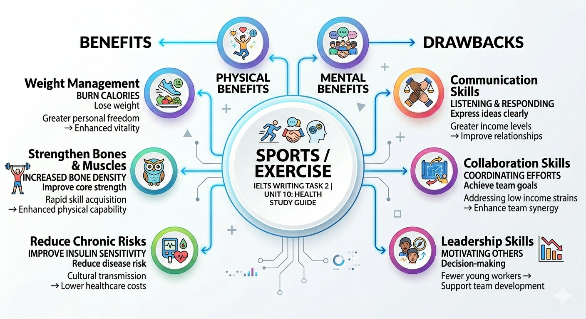

Health & Physical Activities
Khám phá lợi ích đa chiều của thể thao và các vấn đề sức khỏe hiện đại. Bài học được biên soạn bởi Phạm Tiến Dũng Gia Sư.
1. Lợi ích của Thể thao & Hoạt động nhóm
Phát triển Kỹ năng Mềm (Soft Skills)
Tham gia thể thao đồng đội không chỉ rèn luyện thể chất mà còn là "lò luyện" các kỹ năng sống quan trọng:
- ● Leadership: Đưa ra quyết định, chịu trách nhiệm và truyền cảm hứng.
- ● Accountability: Tăng tính trách nhiệm đối với tập thể.
- ● Collaboration: Làm việc nhóm để đạt mục tiêu chung (shared goals).
Teacher's Note: IELTS Vocabulary
Shared goal
Mục tiêu chung
Foster a sense of support
Nuôi dưỡng tinh thần tương trợ
Induce feelings of pleasure
Tạo ra cảm giác hưng phấn/thỏa mãn
2. Tổng quan Sức khỏe (Holistic View)

So sánh & Phân tích Thuật ngữ (Collocations)
| Chủ đề | Key Vocabulary (Band 8+) | Giải nghĩa chuyên sâu |
|---|---|---|
| Lối sống | Sedentary lifestyle | Lối sống thụ động, ít vận động (ngồi nhiều). |
| Thực phẩm | Stimulate the reward center | Kích thích trung tâm hưng phấn của não bộ (thường do đường/fast food). |
| Tâm lý | Boost self-esteem | Nâng cao lòng tự trọng/sự tự tin. |
3. Practice: IELTS Writing Task 2 Analysis
Câu hỏi: Discuss the role of education in reducing junk food consumption.
Hãy phân tích đoạn văn mẫu dưới đây và chú ý các cụm từ highlight.
Phân tích bởi Phạm Tiến Dũng Gia Sư:
- Grammar: Sử dụng câu điều kiện loại 1 (Conditional Type 1) để nói về kết quả khả thi của giáo dục.
- Cohesion: Sử dụng các từ nối "On the one hand", "Additionally", "Furthermore" giúp đoạn văn mạch lạc.
- Lexis: "Small but impactful changes" là cụm từ rất hay để mô tả tác động của thói quen.
Khi viết về vấn đề sức khỏe, đừng chỉ dừng lại ở việc nói "it is bad". Hãy giải thích cơ chế: ví dụ, fast food "stimulates the reward center" (gây nghiện) hoặc làm "degradation of air quality" (gây bệnh hô hấp). Cụ thể hóa là chìa khóa để đạt Band 7.5+.